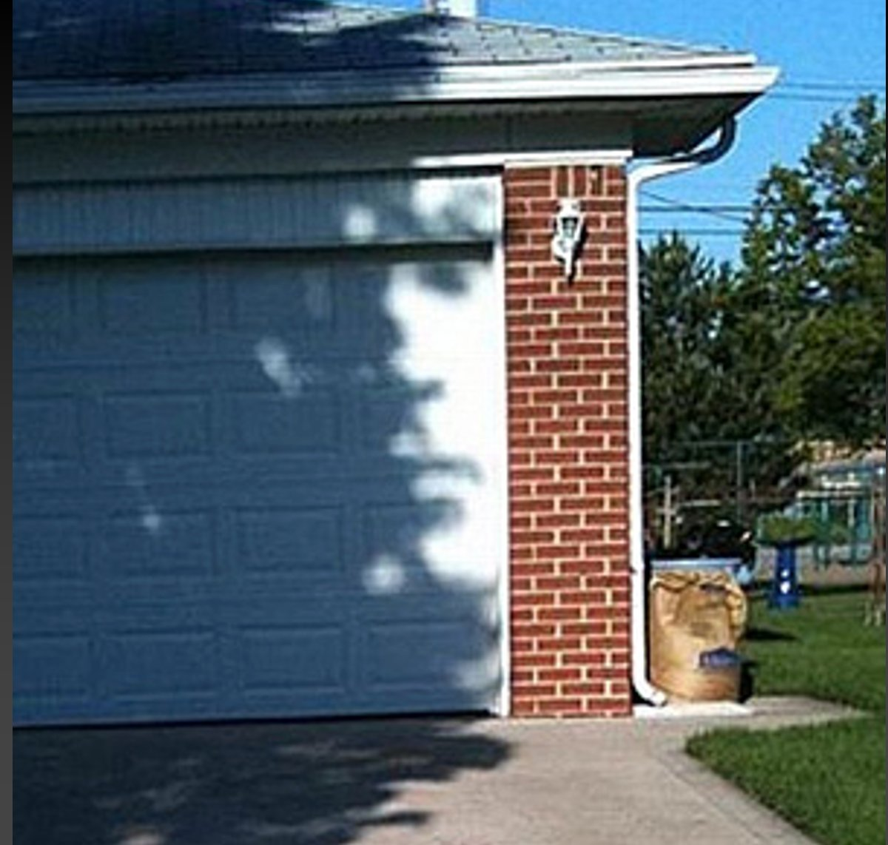

Peder Hammerskov på linkedin,https://www.linkedin.com/posts/peder_aietik-chatgpt-ansvar-activity-7323610779339898880-2FAX
Toldsatser og LLM
Med tak til Amy Hoy. https://bsky.app/profile/amyhoy.bsky.social/post/3lluo7jmsss2w
Bemærk * og $mdash; Matematikere bruger ikke — De bruger - De bruger heller ikke *.
Og så er der det med hvilke lande der er med. det er nok fordi man har brugt en liste over TLD. Hvilket forklarer både pingvinerne (tld: .hm ) og at Gibraltar - der i alle andre sammenhænge er UK (tld: .gi), også blev belagt med told. Pas på med at bruge llms bevidstløst.
Men husk, det er ikke givet at fordi der er mdashes, så er det kunstigt genereret. Selv bruger jeg dem hele tiden når jeg skriver. Der er mange tankestreger i mine skriv. Og jeg indtaster det jo som en -, men i word og outlook laves der autokorrektur til mdash.
Mønstre hvor ingen er
Vores tilbøjelighed til at se mønstre hvor der ikke nødvendigvis er mønstre.
 ::::notes
Mønstre der er der - som vi ikke ser.
Måske fordi vi ikke bryder os om at se dem. Eller det er upopulært at gøre opmærksom på dem.
::::
Gell-Mann hukommelsestab
The Gell-Mann amnesia effect is a cognitive bias describing the tendency of individuals to critically assess media reports in a domain they are knowledgeable about, yet continue to trust reporting in other areas despite recognizing similar potential inaccuracies.
Explainable AI
Det er jo ikke fordi jeg ikke mener at vi bør kunne forklare hvorfor en AI eller ML-model når et bestemt resultat. Men vi bør nok tænke lidt over hvordan vi definerer “explanation” i den kontekst. Ja vi vil gerne vide hvorfor computeren siger at billedet forestiller en kat. Kan vi forklare hvorfor jeg siger at billedet forestiller en kat? Ja, vi vil gerne vide hvorfor en amerikansk algoritme konkluderer at en straffefange ikke skal prøveløslades. Kan vi forklare hvorfor en dommer konkluderer at en straffefange ikke skal prøveløslades.
folk lyver i spørgeskemaer
Hvilket ikke bør komme som en overraskelse, hvis man har mødt mennesker før. Og nogen lyver mere end andre. Det bør heller ikke komme som en overraskelse. Og teenagedrenge lyver fordi de synes det er sjovt. Og hvis man nogensinde har mødt en teenagedreng. Så er det virkelig ikke en overraskelse.
SSGN er den amerikanske betegnelse for atom-drevne missilubåde. Det er modellen med krydsermissiler, der kan være atomare. Ikke at forveksle med SSBN der er ubåde med ballistiske missiler. Der stort set altid er bestykket med termonukleare sprænghoveder.
Se også dette studie https://journals.sagepub.com/doi/10.3102/0013189X14534297 hvor man har kastet online spørgeskemaer i grams blandt 11829 skoleelever i klasse 9-12. Det er usanske skoleelever, så det er “highschool, og derfor i alderen 14-18 år.
Item (and Low-Frequency Response)
Sexual Orientation
Gender Identity
Physical Disability
Heterosexual (N = 11,058)
LGBQ (N = 771)
Cisgender (N = 11,625)
Transgender (N = 204)
Not Disabled (N = 11,528)
Disabled (N = 301)
Provided a height in the top or bottom 2.5%
3.7%
13.5%
3.7%
41.7%
3.6%
31.9%
Provided a weight in the top or bottom 2.5%
4.0%
13.1%
4.1%
30.4%
3.9%
30.6%
Are you deaf or have a hearing impairment? (Yes)
1.3%
8.9%
1.3%
25.5%
0.9%
35.2%
Are you blind or have vision impairment? (Yes)
2.9%
13.9%
3.1%
31.4%
2.7%
39.5%
When was the last time you visited a dentist? (3 or more years ago)
3.4%
12.8%
3.5%
30.9%
3.4%
25.2%
How many times have you been pregnant or have gotten a girl pregnant? (2 or more times)
0.7%
7.8%
0.7%
25.0%
0.7%
18.3%
How many children do you have? (2 or more)
1.3%
6.6%
1.3%
23.0%
1.2%
17.6%
Is one or more of your family members in a gang? (Yes)
3.1%
15.2%
3.2%
41.7%
3.2%
28.9%
Are you in a gang? (Yes, currently)
1.9%
11.3%
1.9%
35.3%
1.9%
27.6%
In the past month, how many days have you carried a weapon to school? (6 or more days)
1.1%
9.2%
1.2%
28.4%
1.1%
22.3%
Hvoraf vi kan konkludere at 1,7% af ungdommen er transkønnede. Og at 23% af dem har to eller flere børn. Det overlades til den interesserede studerende at overveje hvor sandsynligt dét er.
btw.
Jeg besvarer spørgeskemaer fra norstat. De belønner besvarelser af spørgeskemaer. Jo flere spørgsmål der er i et spørgeskema, jo større belønning.
Der er ofte et eller flere screeningsspørgsmål. Det skal sikre at man kun får besvarelser fra målgruppen. Falder man udenfor målgruppen, afsluttes spørgeskemaet, og man får 1 norstat mønt, der kan veksles til et gavekort på 1 kr. Er man i målgruppen får man resten af spørgeskemaet, og når man har besvaret det, får man flere “mønter”. Med andre ord: Jeg får en mønt for at svare at jeg er udenfor målgruppen. Jeg får 12 mønter for at bruge et kvarter på at svare på spørgsmål. Helt rimeligt og fair, jeg skal selvfølgelig have en større belønning for at bruge mere tid.
Når nu det første screeningsspørgsmål er: “Har du inden for den seneste uge spist youghurt?”. Hvad bør jeg så svare for at maximere min indtjening? Når man får sådan et, er der ofte et antal screeningsspørgsmål. Hvis man falder i gruppen der er intereserede i, får man resten af spørgeskemat
Hvad forstår AI?
Forsøget blev lavet 12. juni 2025. Så det kan have ændret sig.
På den anden side…
Vi er bekymrede for at AI bliver klogere end mennesker. Men glemmer at AI, sådan bredt forstået, allerede er klogere end mennesker. Eller i hvert fald på en del punkter præsterer bedre end mennesker. Den genkender katte bedre end vi gør. Og den læser også tekst lige så godt som i hvert fald nogen mennesker:
Ikke for at hænge vedkommende ud. Men Chatty laver nøjagtig samme fejl som den person der skrev denne kommentar.